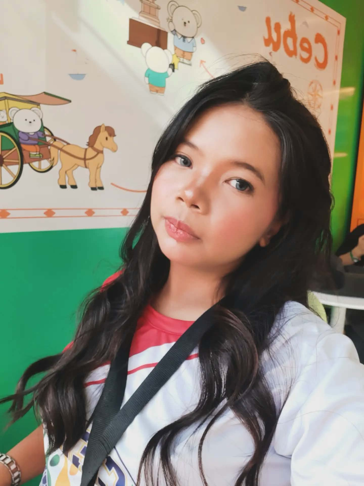
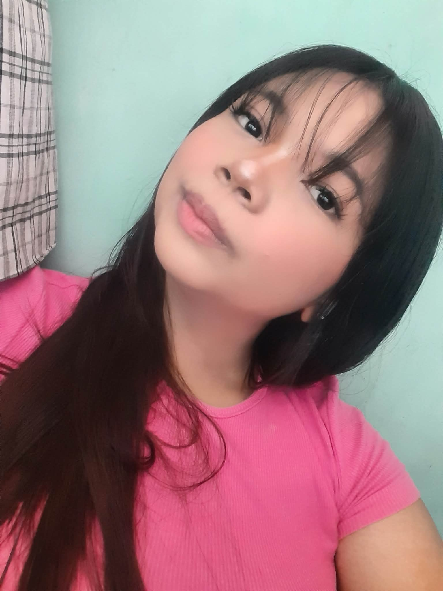
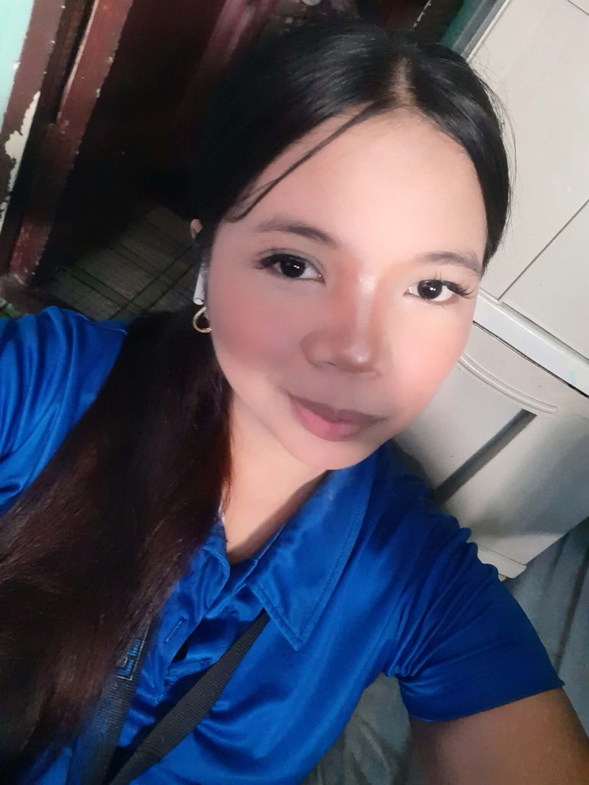
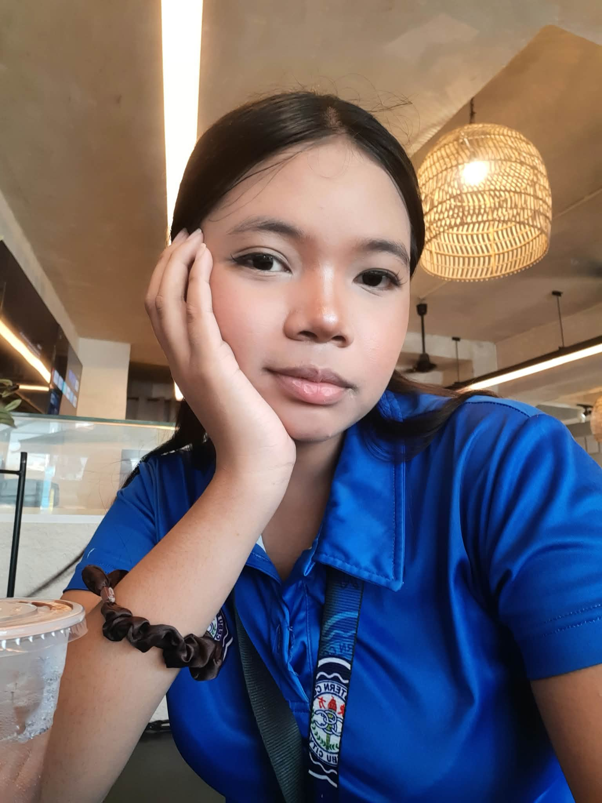
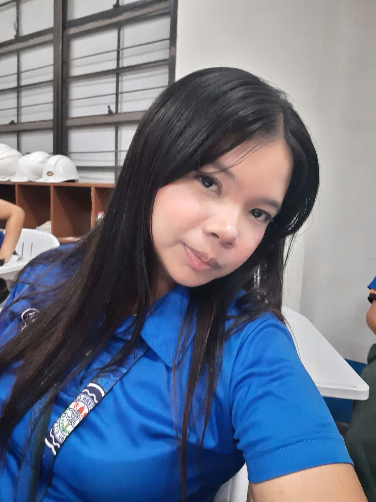
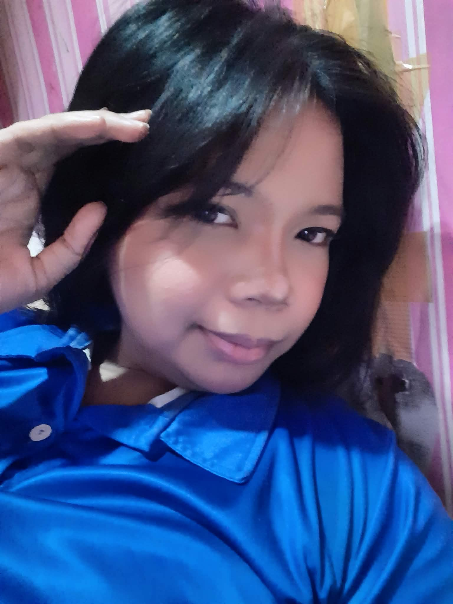
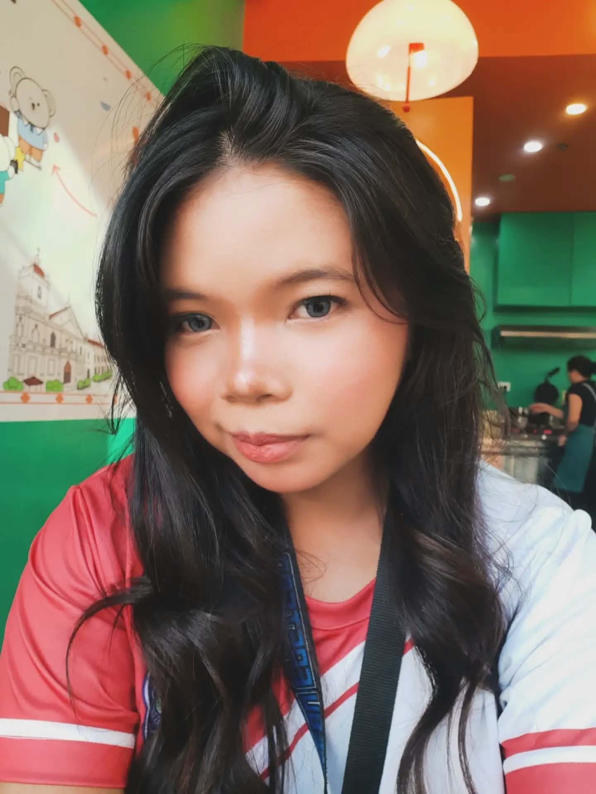

May You Find Happiness
In your favorite songs, warm sunshine, good food, silly jokes, and the little moments that remind you life can be beautiful.
For the girl who deserves a day as lovely as her heart and a year filled with all the happiness she gives to others.
Some things are easier to feel than to say.
Today is all about you. Not just because it is your birthday, but because a person like you deserves to be celebrated. I hope you know that you do not have to be perfect to be special. You do not have to make everyone happy or have everything figured out. You are already enough, exactly as you are.
I hope today gives you a reason to smile from your heart. I hope the little things make you happy, the people around you make you feel loved, and the wishes you keep quietly inside your heart slowly find their way to you.
Happy 19th birthday. May this new chapter be gentle with you, kind to you, and full of beautiful surprises. ♡
Every picture tells a little story. Here are eight memories to make this birthday surprise even more personal.







Little hopes for all the days that come after today.
In your favorite songs, warm sunshine, good food, silly jokes, and the little moments that remind you life can be beautiful.
On your best days and your hardest ones. When you feel confident and when you doubt yourself, I hope you remember that you matter more than you know.
May you have the courage to try, the patience to keep going, and the confidence to be proud of every little step.
You are allowed to rest, change your mind, and start again. You do not have to have every answer at nineteen.
Take a deep breath, close your eyes for a moment, and make a wish for the year ahead. You deserve good things, not only today, but on all the ordinary days, too.
This is simple message written by rochieee.
To the birthday girl,
Happy 19th birthday, beautiful. ♡
I wish I could give you the kind of birthday that makes you smile all day and remember it whenever you need a little happiness. Since words are what I can give you here, I hope these words make you feel even a little bit of how special you are.
Another year has passed, and you are beginning another chapter of your life. Nineteen is such a lovely age. There are new things to discover, new memories to make, new people to meet, and so many versions of yourself that you have not met yet. Some days you might feel excited about the future, while other days you might feel lost or unsure. Both are okay. You do not need to rush. You are allowed to grow at your own pace.
I hope you never forget that your worth is not measured by how pretty you look, how much you achieve, how many people notice you, or how perfectly you handle life. You are valuable simply because you are you. Your laugh, your little habits, the way you express yourself, and the things that make you different are the little things that make you one of a kind.
When life gets heavy, I hope you remember to be kind to yourself. Please do not be too hard on the girl you see in the mirror. She is trying. She is learning. She has made it through every difficult day that brought her here, and that is something to be proud of. Even if you do not always see how far you have come, I hope you give yourself credit for continuing.
I wish you a year filled with real smiles, peaceful nights, unexpected good news, warm hugs, beautiful surprises, and people whose actions make you feel safe and appreciated. I hope the dreams you are afraid to say out loud slowly become things you can reach for. I hope you find courage when you need it, comfort when you are tired, and reasons to laugh when the world feels a little too serious.
And on the days when you feel like you are not doing enough, please remember that you do not have to earn the right to rest. You can take a break. You can ask for help. You can begin again tomorrow. Life is not a race, and you do not have to compare your journey with anyone else's.
Today, I hope you feel celebrated. I hope you feel remembered. I hope you feel that your existence brings something good into this world. There is only one you, and that alone makes your place in this world special. The world is better with your laughter in it, and I hope the coming year gives you many reasons to let that laughter out.
Thank you for being the person you are. Thank you for the little moments, the smiles, and the things that make you uniquely you. Whatever this next year brings, I hope it helps you discover more of your strength, your kindness, and the beautiful future waiting for you.
If you remember only one thing from this letter, let it be this: you are enough. You are worthy of love, respect, happiness, and good things. You deserve to be treated gently, including by yourself. And you deserve a life that feels like it belongs to you.
So here is to your 19th year. May it be softer where life has been hard, brighter where things have felt dark, and full of moments that make you think, "I am really happy to be here." Keep dreaming, keep smiling, and keep being your beautiful self.
Happy birthday once again. I hope this little website becomes a small reminder that someone took time to make something just for you, because your special day deserves a little magic.
MAO RANI AKONG AFFORD AHAHAHAHHAAH ♡
Whenever you feel sad, tired, or unsure of yourself, come back to this page. Let it remind you that you deserve kindness, that your dreams matter, and that there is still so much beauty waiting for you.